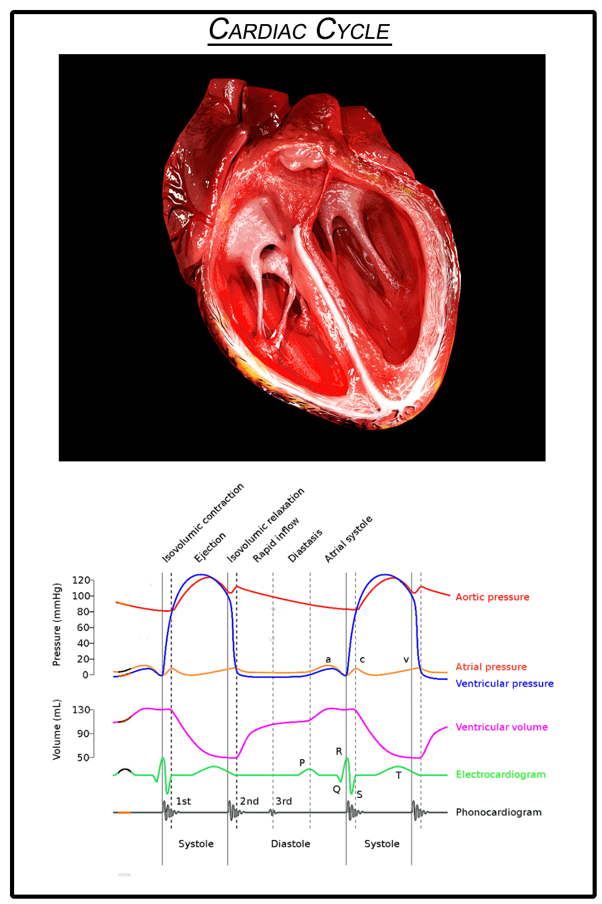
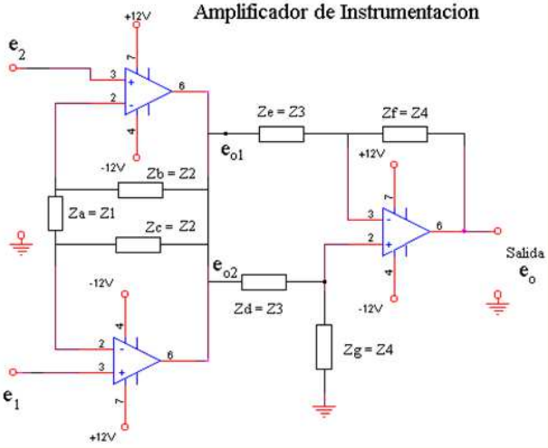
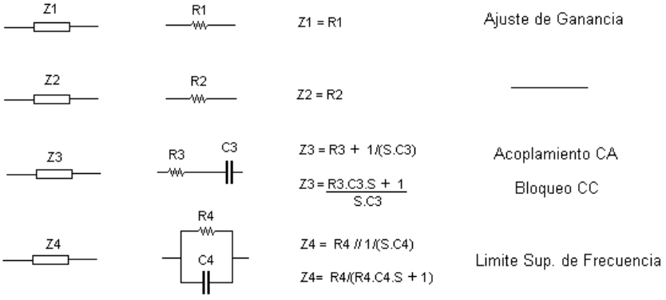
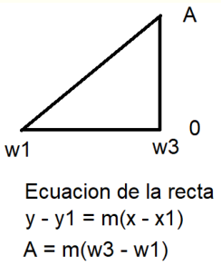
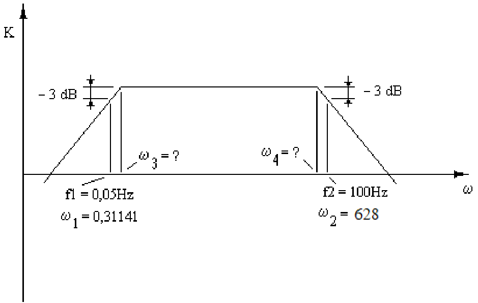
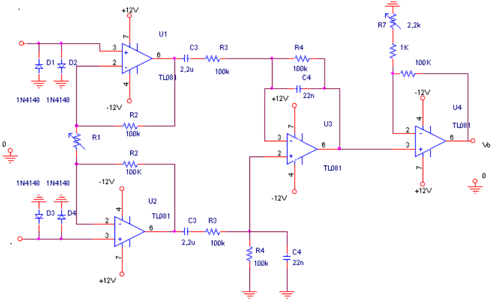
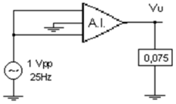
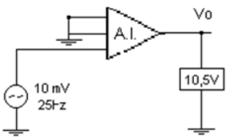
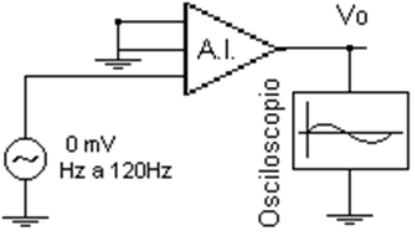

TP3: Aplicaciones Lineales de los
Amplificadores de Instrumentación y Respuesta en frecuencia
Diseñar un circuito amplificador de entrada diferencial para amplificar la señal de EEG
01. Especificaciones y Condiciones de Diseño
El circuito debe cumplir estrictamente las siguientes condiciones para el correcto acondicionamiento analógico de la señal cardíaca:
Dominio de Frecuencia
- Ancho de Banda (−3 dB): 0,05 Hz a 100 Hz — bloquea derivas galvánicas y elimina ruido electromiográfico
- Acoplamiento interetapas: en corriente alterna (CA) para evitar saturación por offsets de continua
- Amplitud señal de entrada: 1 mVpp (señal cardíaca superficial)
Ganancia y Rechazo
- Ganancia diferencial: Amd = 60 dB → 1000 V/V
- RRMC: >> 80 dB — rechaza la interferencia parásita de 50 Hz de la red eléctrica
- Impedancia de entrada: Zi > 5 MΩ — evita atenuación por impedancia electrodo-piel
Resumen de Especificaciones
| Parámetro | Valor |
| Ganancia | 60 dB (1000 V/V) |
| fLOW | 0,05 Hz |
| fHIGH | 100 Hz |
| RRMC | >> 80 dB |
| Zi | > 5 MΩ |
| Señal entrada | 1 mVpp |
02. Fisiología Cardíaca — El Corazón
Anatomía y Función de Bomba
El corazón está dividido en cuatro cámaras. El ciclo cardíaco es la secuencia de eventos eléctricos, mecánicos y sonoros que ocurren durante un latido completo.
- Aurícula Derecha (A.D): recibe sangre venosa sistémica
- Ventrículo Derecho (V.D): bombea hacia el circuito pulmonar
- Aurícula Izquierda (A.I): recibe sangre oxigenada pulmonar
- Ventrículo Izquierdo (V.I): bombea a la Aorta — mayor presión
Esquema animado del ciclo mecánico cardíaco
03. Señal ECG — Ondas P-QRS-T y Dinámica
El Diagrama de Wiggers demuestra cómo cada onda eléctrica precede al evento mecánico del ciclo cardíaco.

Onda P — Aurículas
Precede a la contracción auricular. Señal lenta y de baja amplitud (~0.2mV).
Complejo QRS — Ventrículos
Precede la expulsión de sangre. Contiene las componentes de mayor frecuencia y energía.
Onda T — Repolarización
El músculo recupera su estado eléctrico antes de volver a llenarse en la diástole.
04. Derivaciones ECG — Derivación Tipo I
Sistema de Derivaciones de Einthoven
Una derivación es una combinación de electrodos ubicados en la superficie corporal que permite medir la actividad eléctrica vectorial del corazón.
Derivación I — Usada en este TP
- e₁ (entrada +): Electrodo LA (brazo izquierdo)
- e₂ (entrada −): Electrodo RA (brazo derecho)
- RL (tierra): Pierna derecha → referencia analógica de la placa
Interferencia de modo común
Ambos brazos captan el mismo acoplamiento de 50 Hz de la red. El AI cancela esta señal común gracias al alto RRMC > 80 dB.
05. Selección del Amplificador Operacional
Se evalúan dos candidatos: el OP07 (BJT de precisión) y el TL081 (BiFET de alta impedancia). La decisión se toma en función de las exigencias del ECG.
| Parámetro | OP07 (BJT) | TL081 (BiFET) | ¿Importa para ECG? |
|---|---|---|---|
| Tecnología | Bipolar (BJT) | BiFET (JFET + BJT) | Alta Zi requerida |
| Impedancia entrada Zi | 33 MΩ | > 10¹² Ω | Crítico — no cargar electrodo-piel |
| Corriente de entrada IB | 2 nA | 30 pA | Crítico — evita polarización de electrodos |
| RRMC típico | 120 dB | 86 dB | Ambos cumplen > 80 dB |
| Tensión de offset VOS | 30 µV | 3 mV | Aceptable con acople CA |
| Costo relativo | Alto | Bajo | Factor económico |
Decisión: Familia TL08x (TL084)
La impedancia de entrada de orden TΩ y la corriente de 30 pA son determinantes. El alto VOS (3 mV) es aceptable por el acoplamiento en CA. Además, el uso de la versión cuádruple TL084 optimiza el espacio en la placa (rutado de U1–U4) y garantiza el mismo comportamiento térmico para todas las etapas.
06. Arquitectura del Amplificador de Instrumentación
Análisis de Transferencia
Reemplazando (2) y (3) en (1):

Primera etapa: Amplificación diferencial con alta impedancia de entrada.
Segunda etapa: Restador de precisión para eliminar modo común.
07. Tabla de Sustitución + Función de Transferencia
Esquema de referencia: El filtro se integra directamente sobre las impedancias Z1 a Z4.

Función de Transferencia
- Cero en el origen: Genera la pendiente +20dB/dec (acople CA).
- Polo inferior: p₃ = 1/(R₃C₃) controla la frecuencia de corte inferior fL.
- Polo superior: p₄ = 1/(R₄C₄) controla la frecuencia de corte superior fH.
08. Diagrama de Bode — Respuesta en Frecuencia
Fundamento Matemático

Utilizamos la ecuación de la recta para calcular el corrimiento de las frecuencias de corte, dado que la respuesta en frecuencia tiene una pendiente fija de ±20 dB/dec.
Cálculo de Frecuencias de Corte

Respuesta Asintótica

Conclusión de Banda Pasante
El diseño cumple con los requisitos biomédicos: 0,07 Hz a 71,18 Hz. Esta banda asegura el rechazo de la deriva galvánica y del ruido de la red eléctrica de 50 Hz, manteniendo la integridad del complejo QRS.
09. Desarrollo del Cálculo de Componentes
Ecuación de Diseño (Ganancia y Filtro)
La ganancia total (K=100) es el producto de la amplificación de la etapa de entrada y la constante de tiempo del polo inferior.
Procedimiento de Diseño
Frecuencias de Corte
Red del Filtro
Aislar Ganancia (R₂/R₁)
Valores de Resistencia
Verificación de Transferencia
Los 20 dB restantes para llegar a 60 dB se ajustan en la etapa de salida (U4).
Consideraciones Físicas
- Calibración: Como 4.580 Ω no es estándar, se usa un resistor comercial + trimpot en R₁ para el ajuste fino.
- RRMC: El par R₃ y R₄ debe ser apareado al 1% para no desbalancear el puente del restador.
10. Tabla de Componentes y Calibración
Valores finales normalizados para usar en el laboratorio. Todos los resistores deben ser de 1% de tolerancia (Metal Film) para garantizar el RRMC.
| Comp. | Tipo | Valor | Función |
|---|---|---|---|
| R₁ | Metal Film 1% | 4,58 kΩ | Calibra ganancia etapa 1 |
| R₂ | Metal Film 1% | 100 kΩ | Simetría del lazo |
| R₃ | Metal Film 1% | 100 kΩ | Polo inferior (con C₃) |
| R₄ | Metal Film 1% | 100 kΩ | Polo superior (con C₄) y RRMC |
| R₇ | Trimpot | 10 kΩ | Ajuste fino ganancia U4 |
| C₃ | Electrolítico baja fuga | 22 µF | Bloqueo CC — polo f₃ |
| C₄ | Mica / Poliéster | 22 nF | Filtro AA — polo f₄ |
| D₁–D₄ | Diodo Si rápido | 1N4148 | Protección de entrada |
Verificación en Laboratorio
- Medir R₁ con ohmímetro antes de soldar (buscar ≈ 4,58 kΩ en E96)
- Verificar polaridad de C₃ (electrolítico)
- Orientación de diodos 1N4148 (cátodo hacia +VCC)
- Ajustar R₇ con señal de 10 mV a 25 Hz hasta obtener salida de 10 V
Tolerancia de componentes
Los capacitores y resistores en circuitos reales deben ser de 1% de tolerancia. Desbalances en el par R₃/R₄ degradan directamente el RRMC del amplificador restador (U3).
11. Esquema Eléctrico: Amplificador ECG

1. Etapa de Entrada
TL081 (U1, U2) + R₁: Configuración de amplificador de instrumentación. R₁ ajusta la ganancia diferencial inicial.
2. Filtro Pasabanda
C₃, R₃, C₄, R₄: Integración de redes RC para establecer fL (0,07 Hz) y fH (71 Hz).
3. Salida y Ajuste
TL081 (U4) + R₇: Etapa de ganancia final con trimpot para calibración de escala y offset.
12. Medición y Análisis del RRMC


Cálculo del RRMC
Hardware e ICs Comerciales
Este valor de ~80 dB es excelente para un diseño discreto con resistores al 1%. Los equipos clínicos superan los 100 dB utilizando amplificadores monolíticos con resistores tallados por láser (ej. AD620, INA128 o INA333).
Impacto en Relación Señal/Ruido
Frente a un ruido de red enorme (Ej: 1000 mV), el RRMC lo atenúa en la salida a solo 75 mV. Esto permite que el complejo QRS amplificado sea perfectamente legible sin usar un filtro notch destructivo.
13. Medición de Ancho de Banda
Setup de Medición

Configuración: Inyectar señal diferencial de 10 mVpp. Barrer desde 1 Hz a 2 kHz. Medir Vout y calcular Ganancia (G = Vout / Vin).
Objetivo
Identificar las frecuencias de corte inferior (fL) y superior (fH) donde la ganancia cae 3 dB respecto al valor central (25 Hz).
| f (Hz) | Ganancia | Salida (V) | Entrada (mV) |
|---|---|---|---|
| 1 | — | — | — |
| 2 | — | — | — |
| 5 | — | — | — |
| 10 | — | — | — |
| 20 | — | — | — |
| 25 | — | — | — |
| 50 | — | — | — |
| 75 | — | — | — |
| 100 | — | — | — |
| 125 | — | — | — |
| 150 | — | — | — |
| 200 | — | — | — |
| 300 | — | — | — |
| 500 | — | — | — |
| 700 | — | — | — |
| 1k | — | — | — |
| 1.5k | — | — | — |
| 2k | — | — | — |
Referencia: Respuesta Esperada (Bode)
14. Validación con Señal ECG Virtual
Generador ECG de Laboratorio
Se utiliza el Simulador de Señales Biológicas provisto por el laboratorio central. Internamente cuenta con:
- Microcontrolador PIC16F877 generando la forma de onda digital
- DAC0808 — conversor D/A de 8 bits para reconstrucción analógica
- Serie de AO para conversión Tensión/Corriente, desplazamiento de nivel y filtro pasabajas Sallen-Key
Configuración a usar en el TP
→ Adulto → 60 bpm → 1 mVpp
Esta configuración genera la morfología P-QRS-T de un adulto en reposo a 60 latidos por minuto con amplitud estándar de 1 mV pico a pico.
Resultado esperado en el osciloscopio
Con el circuito calibrado a 60 dB y el simulador en 1 mVpp, se debe observar en la pantalla una forma de onda limpia P-QRS-T de aproximadamente 1 Vpp. El complejo QRS es claramente visible como el pico más pronunciado.
Vista esperada en el osciloscopio con ganancia de 60 dB aplicada